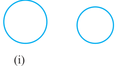
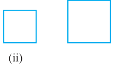
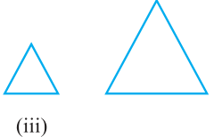
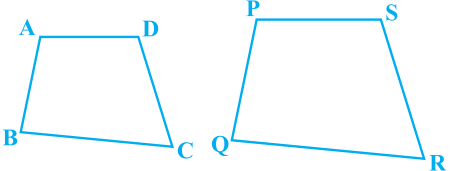
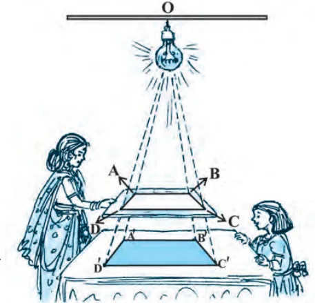
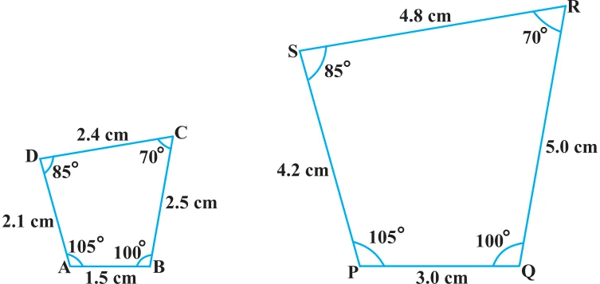
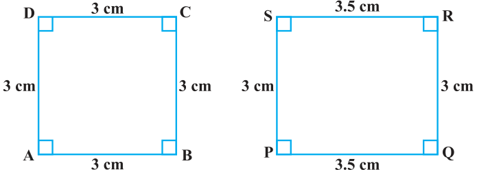
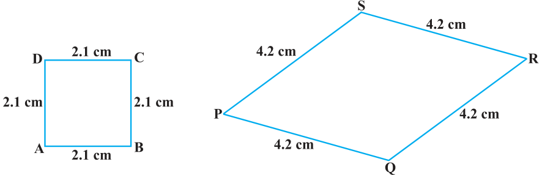

Similar Figures
squares with the same side lengths are congruent and all equilateral triangles with the same side lengths are congruent. Now consider any two (or more) circles [see Fig. 6.1 (i)]. Are they congruent? Since all of them do not have the same radius, they are not congruent to each other. Note that some are congruent and some are not, but all of them have the same shape. So they all are, what we call, similar. Two similar figures have the same shape but not necessarily the same size. Therefore, all circles are similar. What about two (or more) squares or two (or more) equilateral triangles [see Fig. 6.1 (ii) and (iii)]? As observed in the case of circles, here also all squares are similar and all equilateral triangles are similar. From the above, we can say that all congruent figures are similar but the similar figures need not be congruent. Fig. 6.1 Can a circle and a square be similar? Can a triangle and a square be similar? These questions can be answered by just looking at the figures (see Fig. 6.1). Evidently these figures are not similar. (Why?)




What can you say about the two quadrilaterals ABCD and PQRS (see Fig 6.2)?Are they similar? These figures appear to be similar but we cannot be certain about it.Therefore, we must have some definition of similarity of figures and based on this definition some rules to decide whether the two given figures are similar or not. For this, let us look at the photographs given in Fig. 6.3:
You will at once say that they are the photographs of the same monument (Taj Mahal) but are in different sizes. Would you say that the three photographs are similar? Yes,they are. What can you say about the two photographs of the same size of the same person one at the age of 10 years and the other at the age of 40 years? Are these photographs similar? These photographs are of the same size but certainly they are not of the same shape. So, they are not similar. What does the photographer do when she prints photographs of different sizes from the same negative? You must have heard about the stamp size, passport size and postcard size photographs. She generally takes a photograph on a small size film, say of 35mm size and then enlarges it into a bigger size, say 45mm (or 55mm). Thus, if we consider any line segment in the smaller photograph (figure), its corresponding line segment in the bigger photograph (figure) will be \(\frac{45}{35}\) or \(\frac{55}{35}\) of that of the line segment. This really means that every line segment of the smaller photograph is enlarged (increased) in the ratio 35:45 (or 35:55). It can also be said that every line segment of the bigger photograph is reduced (decreased) in the ratio 45:35 (or 55:35). Further, if you consider inclinations (or angles) between any pair of corresponding line segments in the two photographs of different sizes, you shall see that these inclinations(or angles) are always equal. This is the essence of the similarity of two figures and in particular of two polygons. We say that: Two polygons of the same number of sides are similar, if (i) their corresponding angles are equal and (ii) their corresponding sides are in the same ratio (or proportion).
Note that the same ratio of the corresponding sides is referred to as the scale factor (or the Representative Fraction) for the polygons. You must have heard that world maps (i.e., global maps) and blue prints for the construction of a building are prepared using a suitable scale factor and observing certain conventions. In order to understand similarity of figures more clearly, let us perform the following activity:
Activity 1 : Place a lighted bulb at a point O on the ceiling and directly below it a table in your classroom. Let us cut a polygon, say a quadrilateral ABCD, from a plane cardboard and place this cardboard parallel to the ground between the lighted bulb and the table. Then a shadow of ABCD is cast on the table. Mark the outline of this shadow as A ' B ' C ' D ' (see Fig.6.4). Note that the quadrilateral A ' B ' C ' D ' is an enlargement (or magnification) of the quadrilateral ABCD. This is because of the property of light that light propogates in a straight line. You may also note that Fig. 6.4 A ' lies on ray OA, B ' lies on ray OB, C ' lies on OC and D ' lies on OD. Thus, quadrilaterals A ' B ' C ' D ' and ABCD are of the same shape but of different sizes. So, quadrilateral A ' B ' C ' D ' is similiar to quadrilateral ABCD. We can also say that quadrilateral ABCD is similar to the quadrilateral A ' B ' C ' D ' . Here, you can also note that vertex A ' corresponds to vertex A, vertex B ' corresponds to vertex B, vertex C ' corresponds to vertex C and vertex D ' corresponds to vertex D. Symbolically, these correspondences are represented as A ' \leftrightarrow A, B ' \leftrightarrow B, C ' \leftrightarrow C and D ' \leftrightarrow D. By actually measuring the angles and the sides of the two quadrilaterals, you may verify that

- (i)\(\angle A = \angle A\) ' , \(\angle B = \angle B\) ' , \(\angle C = \angle C\) ' , \(\angle D = \angle D\) ' and
- (ii)\(\frac{AB}{A ''B}\) \(= \frac{BC}{B ''C}\) \(= \frac{CD}{C 'D '}\) \(= \frac{DA}{D 'A '}\) .
This again emphasises that two polygons of the same number of sides are similar, if (i) all the corresponding angles are equal and (ii) all the corresponding sides are in the same ratio (or proportion).
From the above, you can easily say that quadrilaterals ABCD and PQRS of Fig. 6.5 are similar.

Remark : You can verify that if one polygon is similar to another polygon and this second polygon is similar to a third polygon, then the first polygon is similar to the third polygon. You may note that in the two quadrilaterals (a square and a rectangle) of Fig. 6.6, corresponding angles are equal, but their corresponding sides are not in the same ratio.

So, the two quadrilaterals are not similar. Similarly, you may note that in the two quadrilaterals (a square and a rhombus) of Fig. 6.7, corresponding sides are in the same ratio, but their corresponding angles are not equal. Again, the two polygons (quadrilaterals) are not similar.

Thus, either of the above two conditions (i) and (ii) of similarity of two